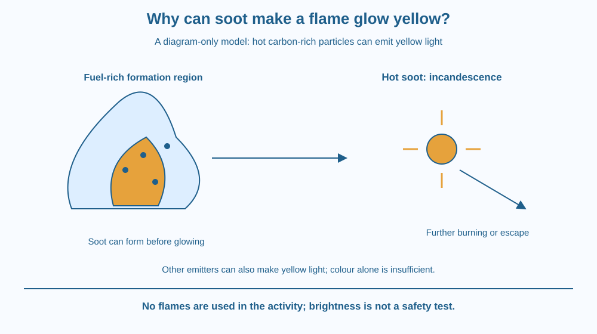

Explain why hot soot particles can make some flames look yellow. Distinguish incandescence, incomplete combustion and colour produced by particular emitting substances. Learn why flame colour alone cannot establish complete burning, temperature or safety.
In a photograph of a candle, part of the flame looks bright yellow. Another flame in a different photograph looks blue. It is tempting to treat colour as a simple label saying good, bad, hot or cold.
The yellow light can have a specific source: tiny carbon-rich particles heated within the flame. Their glow differs from some of the light emitted by gases. To understand the picture, ask which material emits the light rather than assuming every yellow flame has exactly the same explanation.
No real flame is needed for this lesson.
Combustion involves fuel reacting in an environment where fuel and oxidiser mix. Earlier lessons explained oxygen's role. Here the focus is what happens when mixing and burning conditions allow soot to form and become hot enough to emit visible light.
Soot consists of very small carbon-rich particles produced through complex fuel-breakdown and particle-growth processes. It is not simply ordinary dust from the room. The amount formed depends on fuel properties and local conditions within the flame.
Where fuel-rich regions do not burn completely, soot can develop. These particles may travel into hotter or more oxygen-accessible regions, where some can burn further. Whether particles escape depends on the sequence of formation and oxidation along their paths.
Hot particles emit radiation, and sufficiently hot soot can incandesce, producing a bright yellowish glow in familiar luminous flames. Incandescence means light emission associated with high temperature. The particles need not become a new element to emit that light.
A blue flame can have a different light-emission balance, including emission associated with excited gas species. However, blue appearance alone is not a complete certificate of safe or perfectly complete combustion. Conditions and unwanted products need separate assessment.
Not all yellow light in a flame is soot. Particular chemical species can emit strongly at selected colours; sodium is a familiar source of intense yellow emission. This is a reason not to identify soot with certainty from colour alone in every possible flame.
A flame's visible brightness also depends on the amount of emitting material and viewing conditions. A faint-looking flame can still be dangerously hot. Human vision is not a calibrated instrument for measuring flame temperature or pollutant concentration.
Soot particles that escape can contribute to smoke and air pollution. The lesson does not quantify emissions from a particular stove or recommend changing an appliance. It explains a mechanism that must be considered alongside fuel, airflow and appropriate equipment testing.
Draw a fuel-rich region producing small particle symbols. Move them into a hotter region and add light rays. Then split the paths: some particles burn further, while others leave with the flow.
Keep the particle-generation step separate from the light-emission step. Soot can exist without being visibly incandescent once it cools. The glow describes the heated state, not the definition of every soot particle.
Add a separate symbol for a gas emitting a selected colour. This comparison prevents the model from asserting that all yellow emission has one source. A good mechanism explains a specified example while allowing other physical causes in different conditions.
The SVG is a schematic flame section used only as a diagram. It marks a fuel-rich region, tiny soot symbols in a luminous region and paths showing further burning or possible escape.
Light rays around hot particles identify incandescence. A separate caution panel distinguishes particle glow from colour produced by selected emitting species. The colours organise the explanation rather than providing a measured flame-temperature map.
No drawing gives instructions for making or adjusting a flame. The visual is an enlarged mechanism model, not a safe operating guide for a cooker, candle or burner.

Photographs of candles, lamps and combustion devices can contain luminous yellow regions. Understanding hot soot offers a useful explanation for some of those examples without requiring students to light anything.
Smoke from poorly controlled burning raises questions about particles and other products. The visible portion is only part of the output, so judging an appliance by colour or visible smoke alone can miss important issues.
Household cooking equipment should be used and maintained according to its instructions by responsible adults. This lesson does not recommend modifying air openings, fuel supplies or burners to test colour changes. A photograph and labelled diagram are sufficient for the science.
Use a published flame photograph or the supplied SVG, paper and coloured pencils. Do not light a candle, incense stick, match or stove.
The image cannot establish every chemical species or an exact temperature. State that limit rather than inventing measurements. The activity connects possible mechanisms with observations and explicitly leaves identification questions open where the image alone is insufficient.
Why can a soot particle stop glowing after leaving a hot region while still remaining a particle? Separate its material identity from its temperature-dependent emission.
Now imagine two flames with similar apparent yellow colour but different emitting materials. Explain why appearance alone is not a complete chemical identification method. The observation can guide a question without answering every part of it.
What is incandescence?
Answer: C — Hot soot can emit visible light through incandescence.
Why can soot form in fuel-rich regions?
Answer: B — Fuel breakdown and incomplete local burning can lead to carbon-rich particles.
A flame looks yellow in a photograph. What should you avoid claiming from that alone?
Answer: A — Colour alone cannot establish every emitter, temperature or combustion product.
Write a caption for a diagram of a luminous soot-bearing flame. It must connect fuel-rich conditions, particle formation and hot-particle glow, while identifying where further burning might occur.
Include two limits: yellow colour is not always soot, and visible colour does not establish safety. Your caption should explain the mechanism without inviting a home flame experiment or presenting unsupported temperature and emissions numbers.
The bright part of a flame can include glowing solid particles, not only glowing gas. A visually fluid shape can therefore contain several material forms and emission processes at once. Distinguishing those contributors makes the colour more informative and less suitable for a one-word judgement.
Hot soot can produce a yellow incandescent glow, but flame colour alone does not identify every emitter or prove complete combustion and safety.